niklas peters
menu
photography
photography
mono
how do freedom feel?
music
projects
projects
desert designs
gifs
yarn
about
how do freedom feel?
street scenes from nyc, 2010-2015
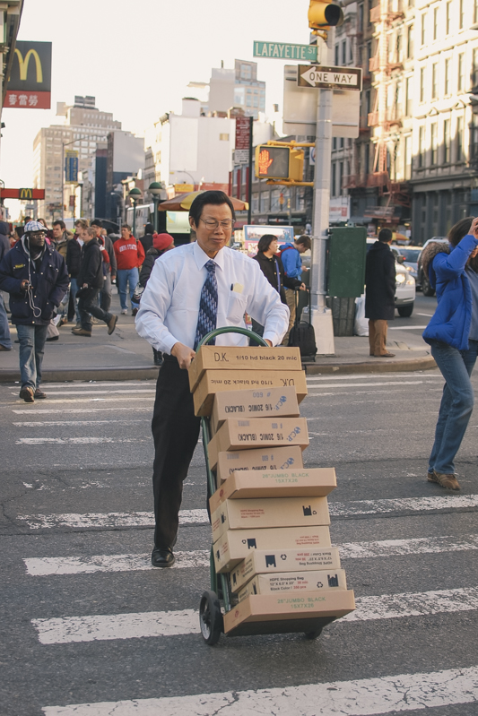
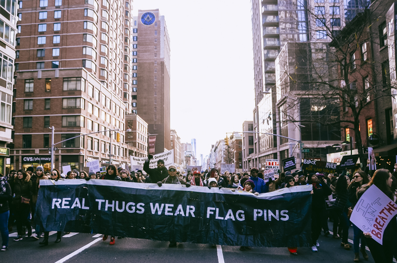 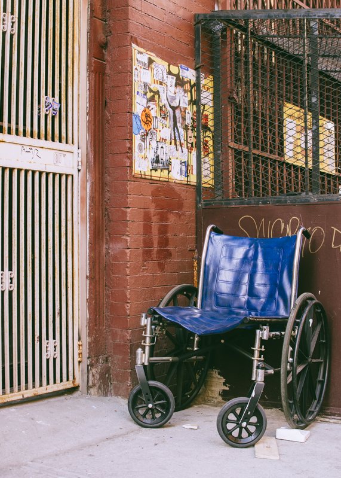
© Niklas Peters, 2016.

 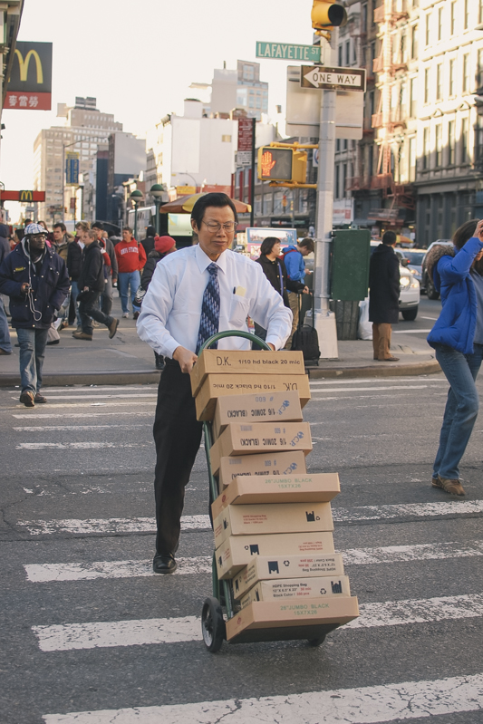
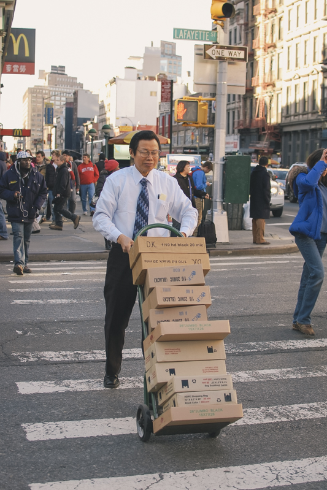


 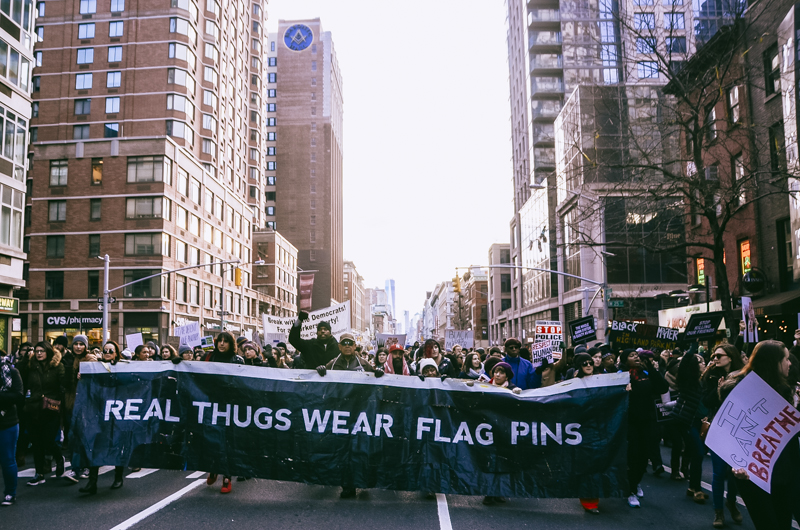
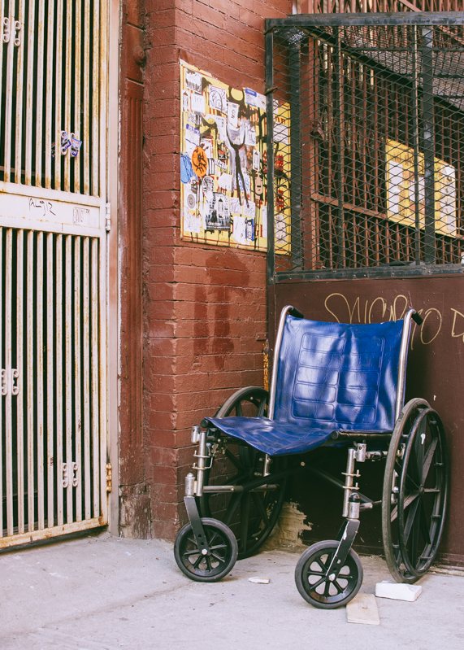
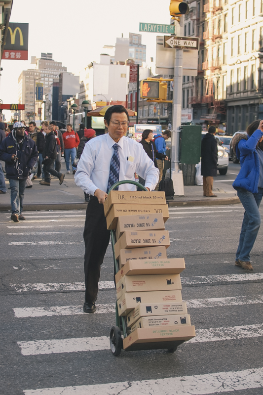
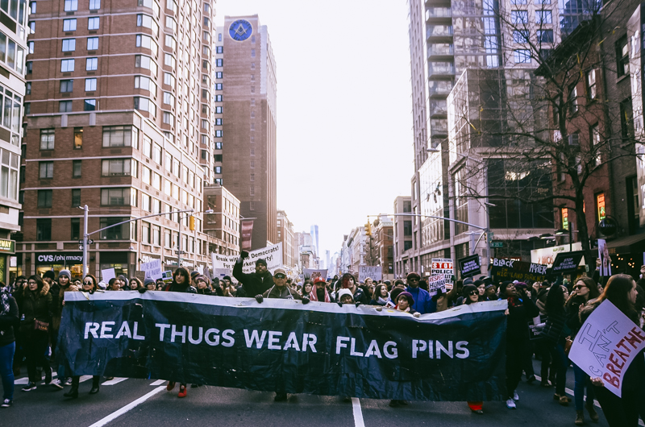
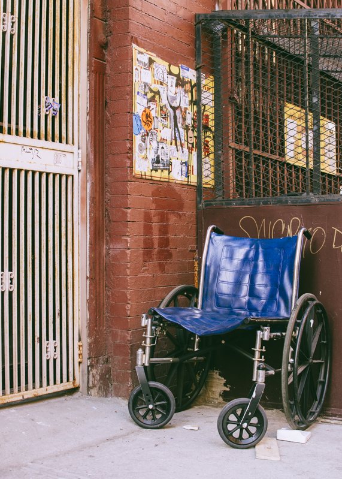
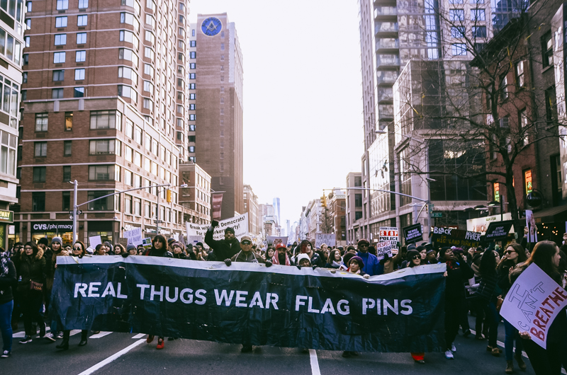
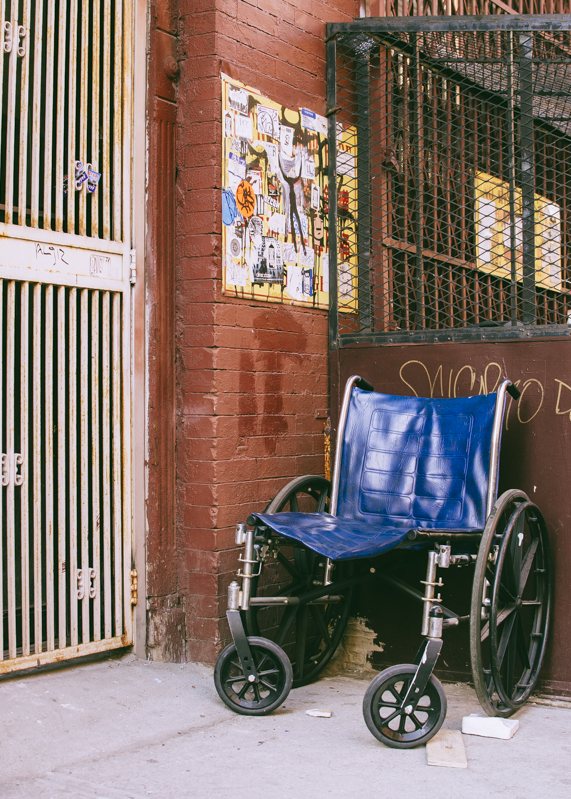
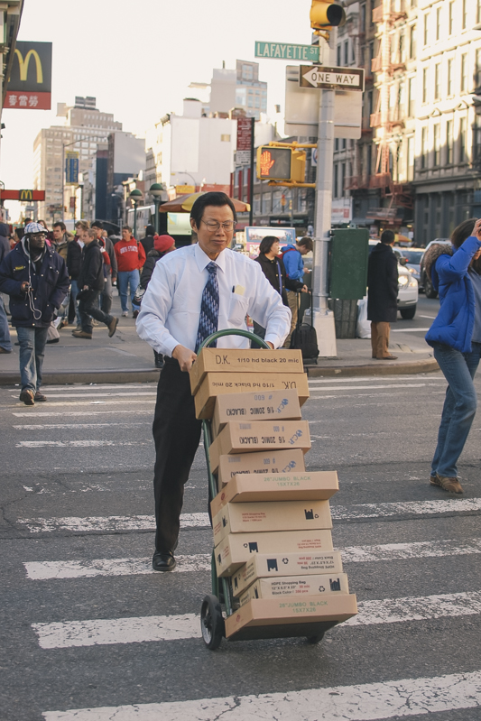
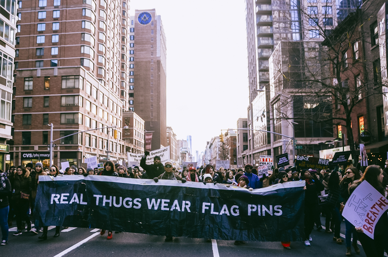
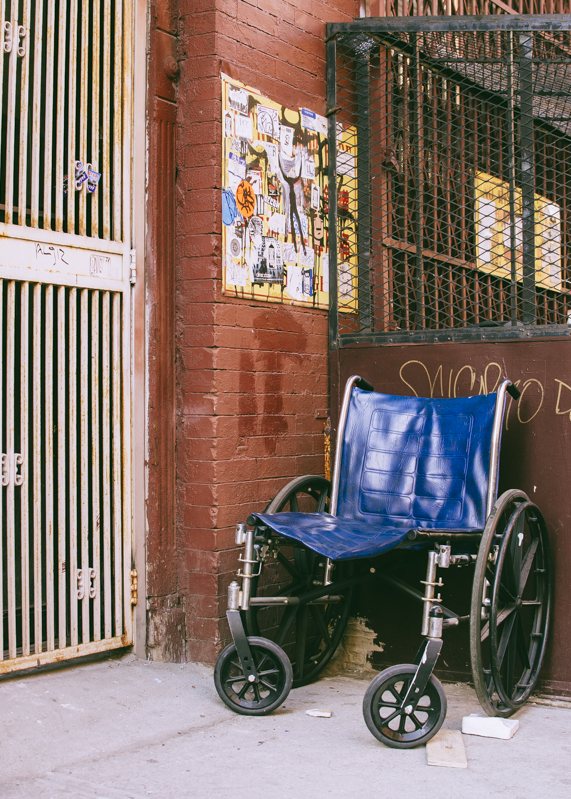